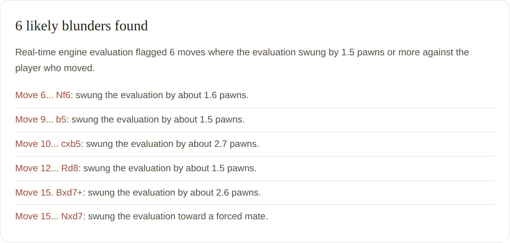
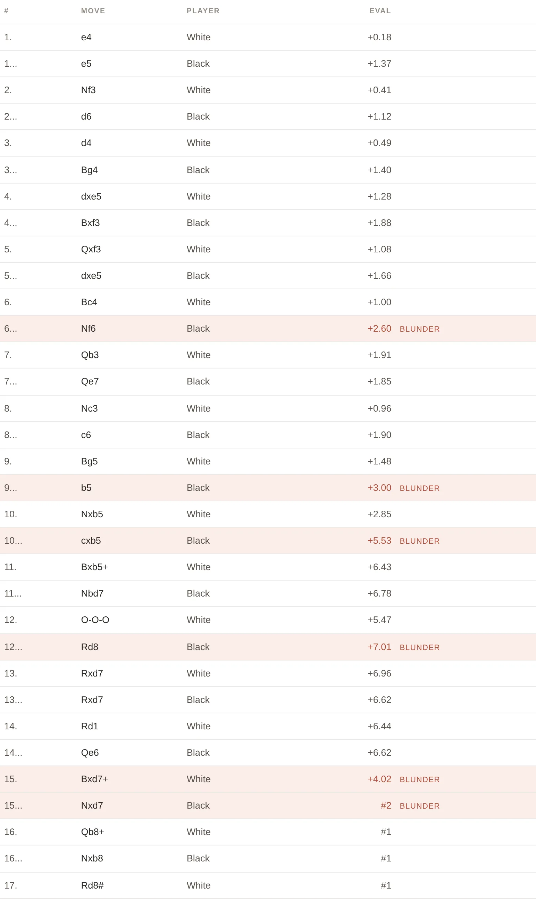

Like having a coach look over your shoulder
Upload one of your games and it walks through how you played, points out where things went wrong, and explains what to work on next, all in plain English. The full app pairs a real chess engine with GPT-4o-mini so the feedback reads like a person wrote it, not a spreadsheet.
Highlights
- Reads a saved game from Chess.com, Lichess, or anywhere else
- Checks every move against a real chess engine
- Automatically points out the biggest mistakes
- Writes a friendly recap with tips to improve (full app, via OpenAI)
- Keeps a history of the games you've reviewed
Examples
Real output from the sample game (Morphy's "Opera Game"), analyzed live by the engine, not mockups.


Live demo
This is the actual engine analysis running: a real Stockfish build compiled to WebAssembly, executing in your browser right now. Paste a PGN or load the sample game below.